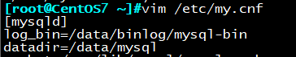
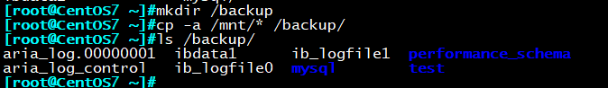

实验准备：
CentOS虚拟机两台，一台作为数据库服务器，一台作为中间存放备份的服务器
数据库服务器：
操作系统：CentOS7.4 IP：192.168.30.10 提示符颜色：蓝色
中间服务器：
操作系统：CentOS7.5 IP：192.168.30.17 提示符颜色：黄色
两台主机安装MariaDB 5.5.56，并且开启二进制日志功能
实验一：冷备份数据库并还原
备份：
数据库初始状态为：

1停止mysql服务
systemctl stop mariadb.service
2打包并压缩备份文件
（注：生产环境应将备份文件与数据库服务器分开存放）
tar Jcvf /data/all.tar.xz /var/lib/mysql/
3模拟破坏数据库
rm -rf /var/lib/mysql/*
还原：
tar xvf /data/all.tar.xz
mv var/lib/mysql/* /var/lib/mysql/
确认文件已生成
ls /var/lib/mysql/
重新启动服务：
systemctl start mariadb.service
确认数据库已恢复
实验二：结合LVM逻辑卷实现几乎热备
备份：
1.创建逻辑卷
新建一个磁盘分区/dev/sda6
pvcreate /dev/sda6
vgcreate vg0 /dev/sda6
lvcreate -L 4G -n lv_mysql vg0
lvcreate -L 4G -n lv_binlog vg0
mkfs.xfs lv_mysql lv_binlog
mkdir /data/{mysql,binlog}
mount /dev/vg0/lv_mysql /data/mysql/
mount /dev/vg0/lv_binlog /data/binlog/
2修改目录权限
chown -R mysql.mysql /data/mysql/
chown -R mysql.mysql /data/binlog/
3修改配置文件
vim /etc/my.cnf
[mysqld]
datadir=/data/mysql
log_bin=/data/binlog/mysql-bin

4重启mysql服务
systemctl restart mariadb
5添加读锁，防止有用户继续写入数据
mysql> flush tables with read lock;
刷新日志
mysql> flush logs;
查看当前二进制日志
mysql> show master logs;
记录最新的二进制日志为：mariadb-bin.000004

6创建快照
lvcreate -L 1G -n lv_mysql_snap -s -p r /dev/vg0/lv_mysql

7解锁数据库
Mysql> unlock tables；
8挂载逻辑卷快照
mount -o nouuid,norecovery /dev/vg0/lv_mysql_snap /mnt

9将逻辑卷文件备份至backup目录
mkdir /backup
cp -a /mnt/* /backup/

10删除快照,否则影响用户访问数据库速度
umount /mnt
lvremove /dev/vg0/lv_mysql_snap
备份过程结束
Mysql > create databases db2
Mysql > create databases db3
模拟数据库损坏:
rm –rf /data/mysql/*
还原：
停止mysql服务
systemctl stop mariadb
拷贝备份文件至数据库目录
cp -av /backup/* /data/mysql/
开启mysql服务
systemctl start mariadb
此时数据库已还原至快照时的状态
二进制继续修复db1，db2
mysql> flush tables with read lock;
mysqlbinlog –start-position=245 mysql-bin.000004 > /backup/bin.sql
mysqlbinlog mysql-bin.000005 >> /backup/bin.sql
确保恢复过程中，没有用户可以读取或写入
vim /etc/my.cnf
[mysqld]
skip_networking
或iptables –A
重启mysql服务使生效
systemctl restart mariadb
导入二进制文件
mysql < /backup/bin.sql
此时数据库已还原至最新状态
最后，恢复用户访问
vim /etc/my.cnf
[mysqld]
skip_networking 去掉
或清除防火墙
systemctl restart mariadb
实验三：数据库数据文件损坏后，利用mysqldump还原至最新状态
初始数据库为：

利用mysqldump生成备份文件
mysqldump -A -F –single-transaction –master-data=2>/backup/fullbak_date +%F.sql
ls /backup -l

最新二进制日志为：mariadb-bin.000006

模拟日常将备份传至中间主机：192.168.30.17

接下来为了方便演示，我们之间在中间主机进行数据库恢复：
rm -rf /var/lib/mysql
还原：
利用mysqlbinlog命令可查看二进制日志，看到创建db2，db3发生在position245之后
mysqlbinlog mariadb-bin.000006

首先还是停止mysql服务
systemctl stop mariadb.service
禁止其他用户访问或修改数据库
vim /etc/my.cnf
[msyqld]
skip_networking
生成二进制备份文件
mysqlbinlog –start-position=245 mysql-bin.000012 > bin.sql
重新开启mysql服务
systemctl start mariadb.service
修复至mysqldump全备份阶段
mysql < fullbak_2018-06-14.sql

继续二进制修复db2，db3
mysql < bin.sql
此时，数据库修复完成，最后别忘了修改配置文件
vim /etc/my.cnf
[msyqld]
skip_networking 去掉此行
重启mysql服务
systemctl restart mysql
实验四：误删除表后，利用mysqldump还原至最新状态
前期准备:开启二进制日志功能
实验场景：模拟周日进行了全备份，周一上午10表被误删除，10点之前与之后均发生了其他操作，尝试还
原数据库中误删除的表并且操作不发生丢失
数据库初始状态

模拟周日进行完全备份：

模拟周一上午10点数据发生了修改(students表原总行数为25)
Mysql > insert students values(26,’mysql’,’30’,’M’,2,3);
模拟周一上午10点某张表被删除
Mysql > drop table students;
模拟周一上午10点至10点10分间又进行了其他操作
insert teachers values(5,’mht’,’46’,’m’)；
周一上午10点10分，发现students表丢失
还原：
Mysql > flush tables with read lock;
查看当前二进制日志为：mariadb-bin.000003
Mysql > show master logs;
刷新二进制日志
Mysql > flush logs

查看全备份的position，确定全备份到目前之间的所有日志文件及position
less /backup/fullbak

mysqlbinlog –start-position=245 /var/lib/mysql/mariadb-bin.000003 > /backup/bin.sql
mysqlbinlog /var/lib/mysql/mariadb-bin.000004 >> /backup/bin.sql
找到想要撤销的操作，删除
vim /backup/bin.sql

停止mysql服务
systemctl stop mariadb.service
禁止其他用户访问或修改数据库
vim /etc/my.cnf
[msyqld]
skip_networking
删除库下数据(不用紧张^^)
rm -rf /var/lib/mysql/*
重新启动mysql服务
systemctl start mariadb.service
导入周日的全备份
mysql < /backup/fullbak_2018-06-14.sql
继续导入修改过的二进制备份
mysql < /backup/bin.sql
我们看到students表还原成功，而且不论是表删除之前还是之后发生的操作也都恢复回来了

此时，数据库修复完成，最后别忘了修改配置文件
vim /etc/my.cnf
[msyqld]
skip_networking 去掉此行
重启mysql服务
systemctl restart mysql
实验五：Xtrabackup完全备份及还原
安装xtrabackup包(epel)
yum install percona*
数据库初始为：

利用innobackupex命令完全备份
Innobackupex [ –user=root –password=!@#$% ] /backup/

模拟日常将备份传至中间主机：192.168.30.17
scp -r /backup/ 192.168.30.17:/
还原：
接下来为了方便演示，我们之间在中间主机进行数据库恢复：
停止mysql服务
systemctl stop mariadb.service
清空数据库
rm –rf /var/lib/mysql/*
整合完全备份
innobackupex –apply-log /backup/2018-06-14_17-08-53/

自动复制到数据库目录，但所属主为root，需要变更
innobackupex –copy-back /backup/2018-06-14_17-08-53/

chown -R mysql.mysql /var/lib/mysql/
重新开启mysql服务
systemctl start mariadb.server
数据库恢复成功

实验六：Xtrabackup完全，增量备份及还原
初始数据库为：

mkdir /backup/
mkdir /backup/{inc1,inc2}
Innobackupex [ –user=root –password=!@#$% ] /backup/
模拟第一次修改数据库
mysql> insert students values(26,’test1′,18,’M’,1,2)；
第一次增量备份
innobackupex –incremental /backup/inc1 –incremental-basedir=
/backup/2018-06-14_17-50-43
模拟第二次修改数据库
mysql> insert students values(27,’test1′,28,’M’,1,2)；
第二次增量备份
Innobackupex –incremental/backup/inc2 –incremental-basedir=
/backup/inc1/2018-06-14_17-55-52
此时backup目录结构

复制到远程主机做备份：
scp -r /backup/ 192.68.30.17:/
还原：
接下来为了方便演示，我们之间在中间主机进行数据库恢复：
停止mysql服务
systemctl stop mariadb.service
清空数据库
rm –rf /var/lib/mysql/*
整合完全备份：
innobackupex –apply-log –redo-only /backup/2018-06-14_17-50-43/
整合第一次增量备份：
innobackupex –apply-log –redo-only /backup/2018-06-14_17-50-43/ –incremental-dir /backup/inc1/2018-06-14_17-55-52
整合第二次增量备份：
innobackupex –apply-log –redo-only /backup/2018-06-14_17-50-43/ –incremental-dir /backup/inc2/2018-06-14_17-59-00
自动复制到数据库目录，但所属主为root，需要变更
innobackupex –copy-back /backup/2018-06-14_17-50-43/

更改属主为mysql
chown -R mysql.mysql /var/lib/mysql/*
重新开启mysql服务
systemctl start mariadb.service
此时，我们看到第一次修改，第二次修改的数据也已还原

实验七：Xtrabackup单表导出和导入
前期准备：必须设置独立表空间
vim /etc/my.cnf
[mysqld]
innodb_file_per_table
初始表信息为:
1单表备份
innobackupex –include=”hellodb.students” /backup/
2备份表结构
mysql -e ‘show create table hellodb.students’ > students.sql
删除其中的多余部分，留下下图所示内容

vim students.sql
3模拟破坏表
mysql -e ‘drop table hellodb.students’

###
还原：
整合备份
innobackupex –apply-log –export /backup/2018-06-14_19-03-21
导入表结构
mysql hellodb < students.sql
此时表结构已生成，但数据为空

删除表空间
mysql -e ‘alter table hellodb.students discard tablespace’
复制相关文件到hellodb目录
cd /backup/2018-06-14_19-37-02/hellodb/
cp students.cfg students.exp students.ibd /data/mysql/hellodb/
修改hellodb目录下文件权限
chown mysql.mysql /data/mysql/hellodb/*
mysql>alter table students import tablespace;
此时数据已恢复完成